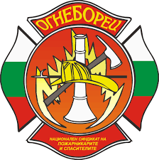

Пожарна Безопасност - област Бургас

Пламъци обхванаха таванския етаж на къща в Стария Несебър
08 март 2021г.
Пожар е горял в къща в Стария Несебър. Това съобщиха от ОДМВР - Бургас. Случаят е от 5 март т.г. около 06:13 часа. В Районно управление-Несебър е получено съобщение за пожар, възникнал в таванския (трети) етаж на частна къща, разположена на ул. "Емона" №13 в Стария Несебър.
Констатирано е, че пожара по неустановени до момента причини възникнал около 04.00 часа, като е забелязан от 24-годишния син на една от съсобственичките.
От инцидента таванския етаж обгорял, а голяма част от покрива изгоряла напълно, като паднала на пода.